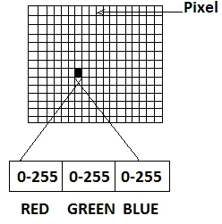
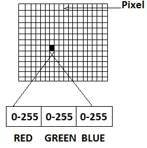

Making of Rock Paper Scissors Using OpenCV and Mediapipe

Why Make it?
I made this game simply for the purpose of learning about OpenCV and as my semester end Python project. The game is simple and straight forward and the codebase is also the same. It sure was a headache to make, especially implementing MediaPipe because Google's documentation was a bit difficult for me to understand and other tutorials out there were not aligning with my vision for this project.
Here is the codebase for my project. I have documented each and everything as comments in the Jupyter Notebook itself. If I have missed out on something, you could open an issue or pull-request on Github or email me about it.
Working of The Game
Unless you live under a rock, you must know about the simple game of Rock Paper Scissors.
For the uninitiated, click here to know more about the game
My implementation of this game is in Python which uses OpenCV , a real-time computer vision library, to capture the player's hand gestures through a webcam and applies MediaPipe , a library of AI/ML models on the captured data to recognize the hand and its movements. The system then classifies the hand gesture as either rock, paper, or scissors using hand landmarks and their coordinates. The PC's move is randomly generated
Thats a loads of stuff in one paragraph, ill quickly break it down for you :)
What OpenCV Does:
 

OpenCV reads from the webcam and stores each frame as a matrix of BRG (Blue, Red, Green) values of each pixel of the image. BRG is essentially RGB (Red, Green, Blue) values but reversed. OpenCV reads in images in BGR format instead of RGB because when OpenCV was first being developed, BGR color format was popular among camera manufacturers and image software providers. The red channel was considered one of the least important color channels so was listed last. However, now the standard has changed and most image software and cameras use RGB format,due to better image quality.
What MediaPipe Does
Mediapipe is basically a pre-made AI/ML solutions/modals which Google has made available to the general public for free.It provides a variety of pre-built, customizable solutions for various use cases like object tracking, audio classification.I used the Hand Gesture Recognition Solution which uses the hand landmark model. The hand landmark model bundle detects the key-point localization of 21 hand-knuckle coordinates within the detected hand regions. The model was trained on approximately 30K real-world images, as well as several rendered synthetic hand models imposed over various backgrounds.